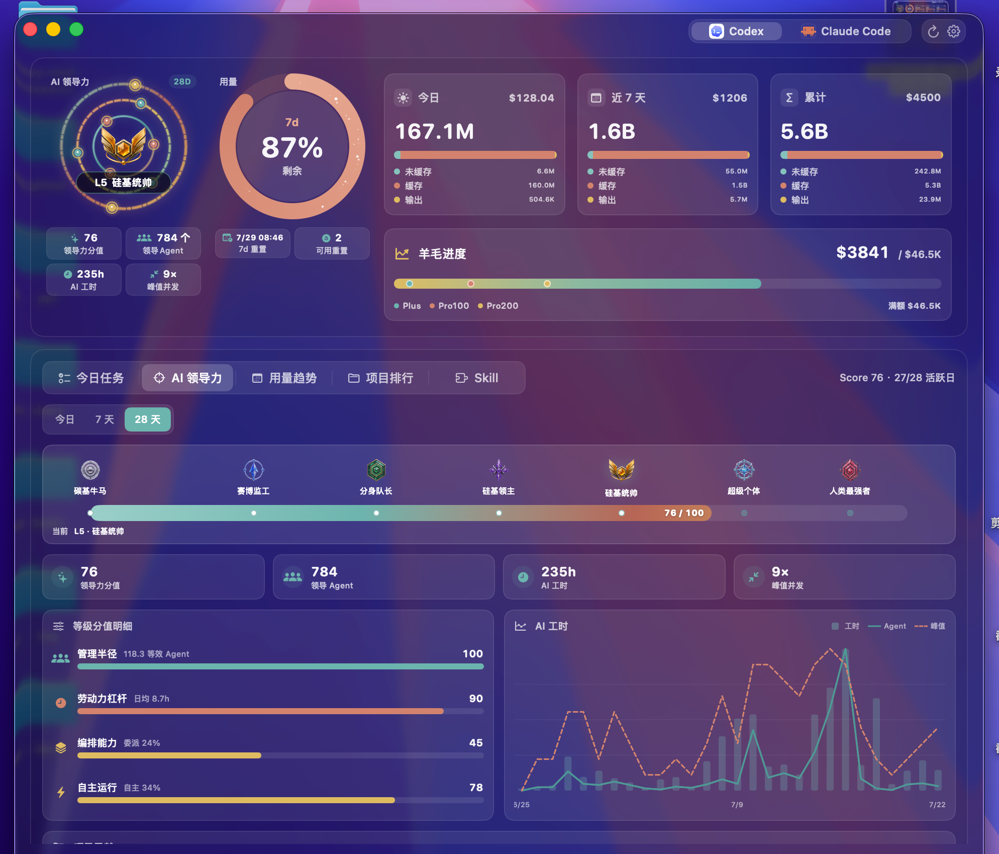
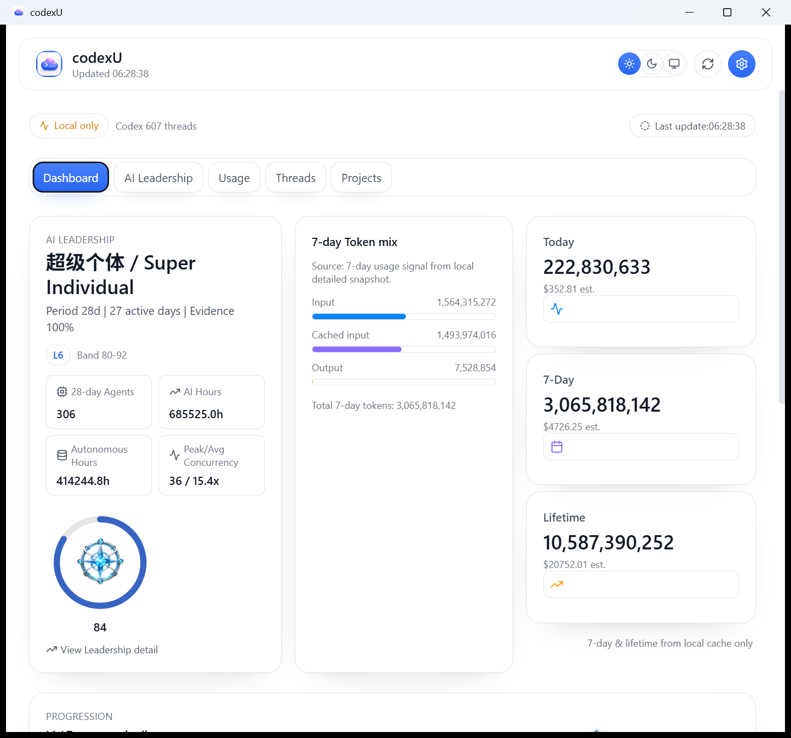
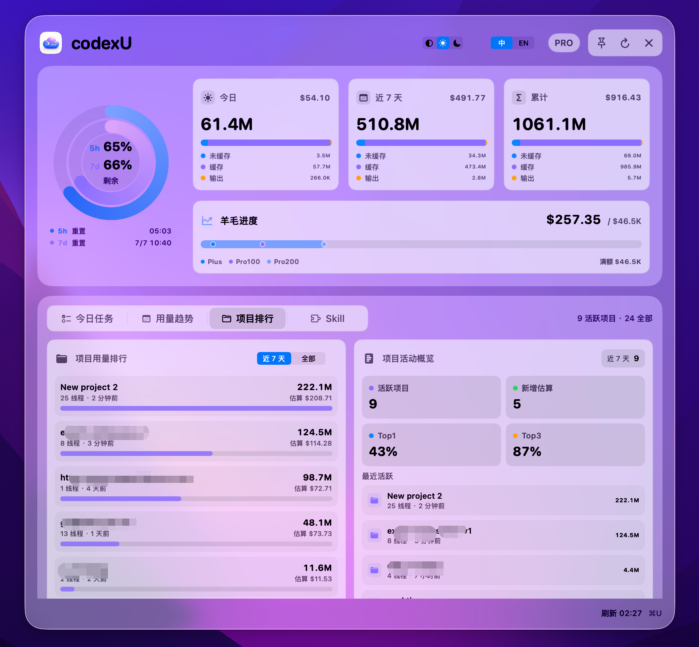
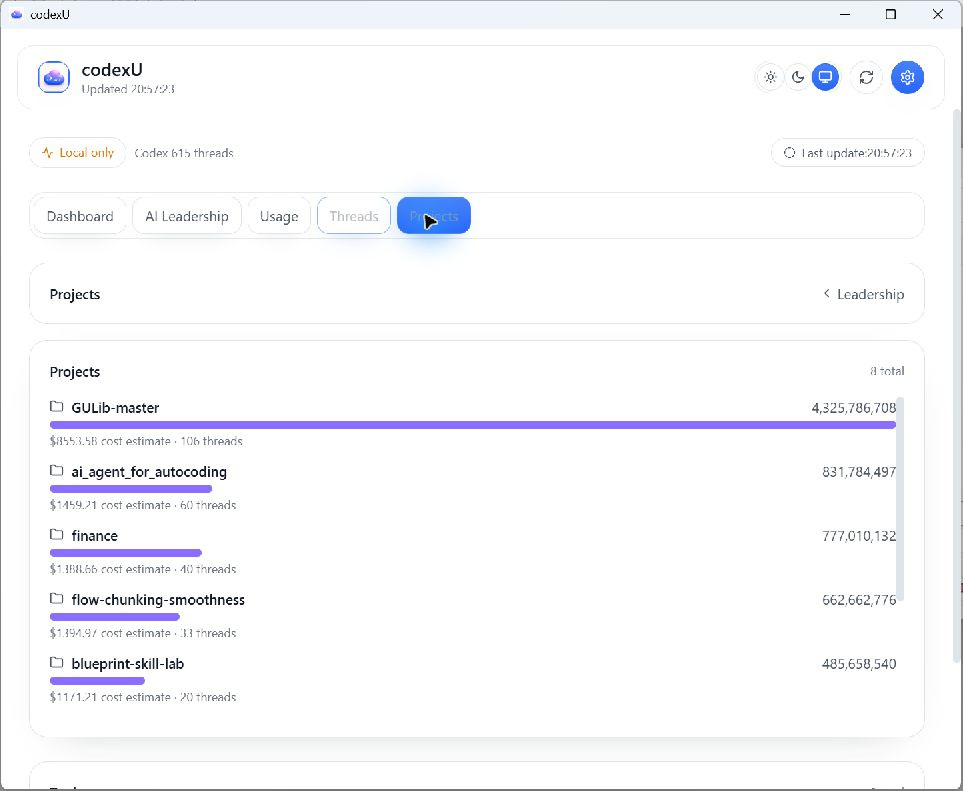
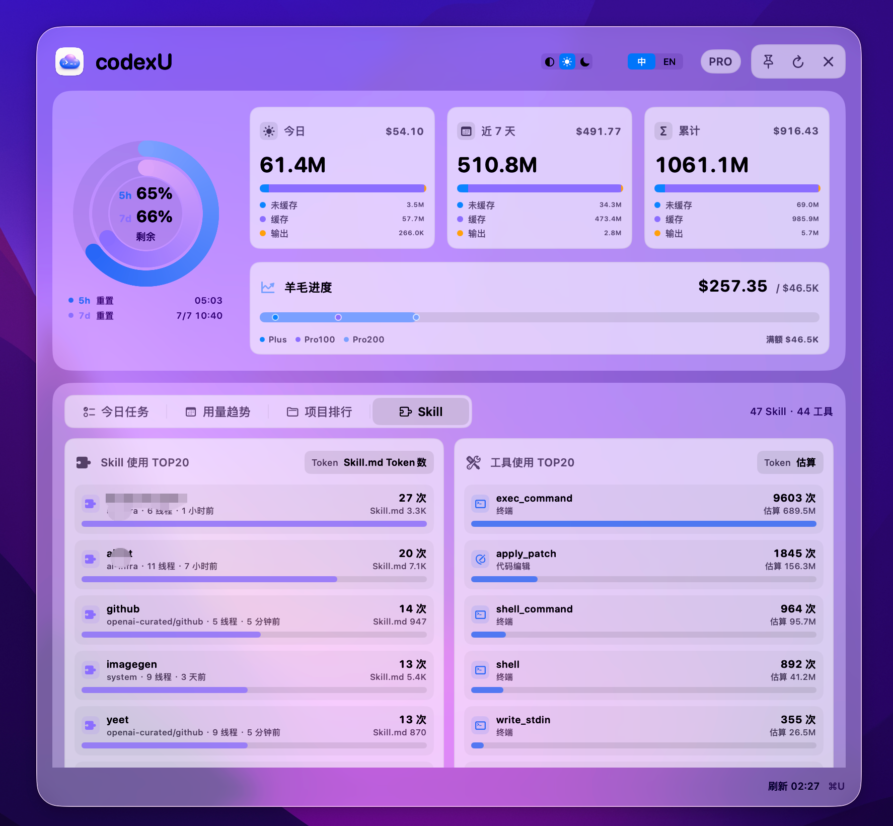
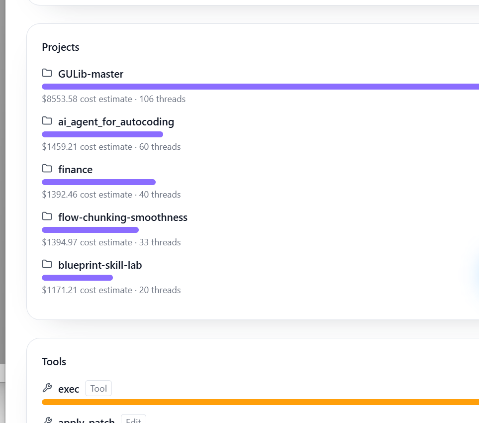
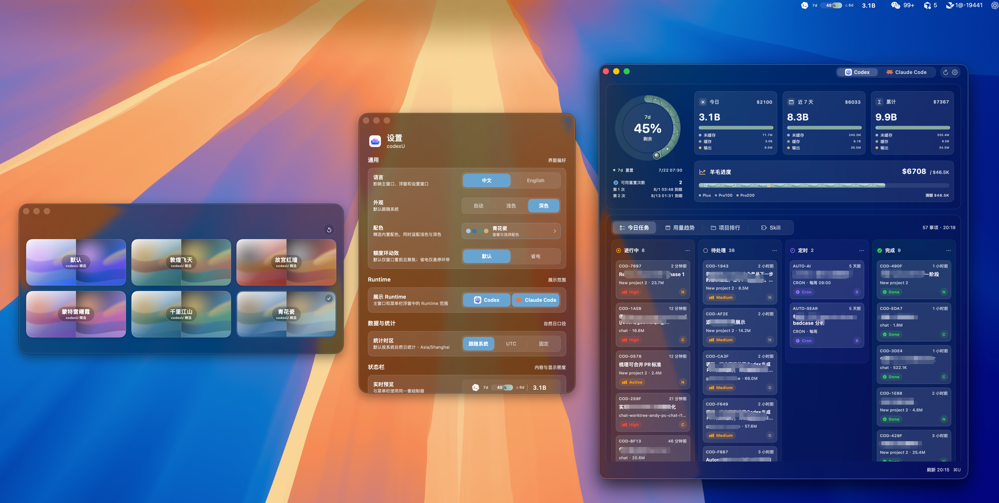

macOS / Windows Dashboard Feature Comparison
This page aligns the macOS README screenshot sequence with Windows native evidence in one-to-one pairs.
Legend: fixed overview, variable panel, partial, not implemented, outside Dashboard + partial.
1. Information structure alignment
macOS README order: AI Leadership, Today, Usage, Projects, Skills.
Windows mapping: Dashboard Home (Leadership + Token mix + Today/7-Day/Lifetime), then native equivalents by hierarchy.
Windows currently does not expose all README areas as independent pages; rows use the highest-fidelity same-level evidence.
2. Fixed overview
2.1 AI Leadership / Dashboard Overview


- Windows shows Leadership + local 7-day Token mix + usage summary cluster and progression rail in home scope.
3. Variable panels (aligned to README order)
3.1 Today / Tasks
- No standalone Tasks/Today page in the current Windows release; mapped to equivalent top-cluster metrics in Dashboard Home.
3.2 Usage


- Windows mapping is local-token scope and equivalent hierarchy, with naming differences from official macOS quota phrasing.
3.3 Projects


- Windows shows project ranking as native equivalent at the same hierarchy layer.
3.4 Skills


- Windows currently exposes tool usage evidence; a dedicated Skills page is not yet implemented as a separate native page.
4. Settings / Palette


- Both sides provide a configuration entry; container and control vocabulary differ by OS host conventions.
5. Alignment summary
- AI Leadership: fixed overview mapping.
- Today / Tasks and Skills: variable panel + not implemented (no dedicated page in this Windows version).
- Usage and Projects: variable panel + partial.
- Settings / Palette: outside Dashboard + partial.